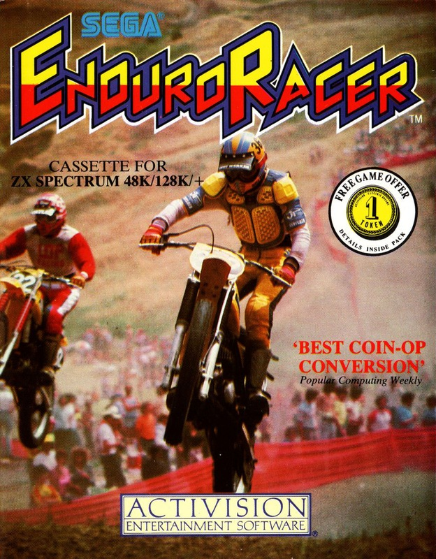
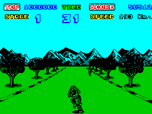
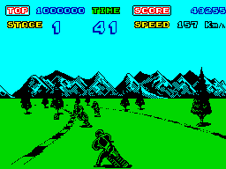
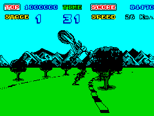

Enduro Racer


{kind=link}

| Publisher: | Activision |
| Price: | £9.99 |
| Year: | 1987 |
| Source: | CRASH, Issue 40 |

Race games never quite seem to lose their thrill, though many in the past have disappointed after raising expectations beyond programming skills. Now, after plenty of rather early magazine coverage, Activision’s licensed version of Sega’s successful coin-op Enduro Racer is out for appraisal.

wheelie, the biker’s major problem is
that obstructive desert jeep
The action involves a series of motorcycle races spread over five courses, each accompanied by its own background landscape. The objective is simple; out-race other riders and successfully complete all the levels in the shortest possible time.
The biker is viewed from behind and slightly above, in vanishing point perspective. He’s generally centred in the screen, while the track scrolls sideways as necessary to suggest curves, and the distant landscape follows suit. The horizon also moves up and down, for Activision have incorporated the original’s bumps and hills.

other bikers are the main hazard and ...
The first course, set in a tree-lined country road, introduces the player to some of the hazards that lie ahead on other tracks. There’s only a handful of competitors to contend with, and few jumps, or wheelies, to be executed. Control is straightforward: steer left and right, accelerate, brake and wheelies (used to avoid losing speed on jumps).
At the start of every race a timer is set to 60 seconds, the limit within which the course must be completed — the actual time taken to complete a course is displayed at the end of each circuit. Opponent racers pose a threat in as much as a collision with one flings your bike aside, losing you valuable time as you restart.
The second track, set in a desert, is made even more treacherous by the addition of rock falls, and the presence of a jeep hurtling around the course alongside the bikes. The third circuit tests your skills further by the inclusion of water on either side of the track, and the two final courses are even harder — snow on the fourth, and sea and sand on the fifth.
Sadly, Activision have decided not to include the arcade original’s bike saddle to sit on while playing — you’ll just have to borrow a friend’s motor cycle, or imagine the sensation!
CRITICISM

you can easily be flung off your
machine!
“Well done Activision! At last someone’s come up with a very realistic arcade conversion — you feel as though you’re actually sat on a bike, hurtling along a race track at over a hundred miles an hour. The graphics are amazing, hills, dips, jumps, trees, rocks and stones are all well designed and excellently animated. One little quirk though, I wasn’t happy with the annoying tune which plays while you’re racing — it gets in the way of the engine’s revving sound. The price is a little high, but the realism makes this package well worth the money.”
GARETH
“Full Throttle was undoubtedly my favourite race game, but I must confess, Enduro Racer has converted me. It knocks the pants off Spectrum race games. The graphics are superb, the bumps and ridges in the roads are conveyed excellently. My only moan is the 48K sound; it’s been used endlessly for Formula I racing cars, helicopter rotors and aircraft engines. They all sound the same! Still, the superb front end makes up for this, it’s got a good high score/best time table and loads of options. Enduro Racer must stand as one of the most successful conversions for a long time, and I think it’s a game all road race fans couldn’t survive without. Brilliant.”
MIKE
“Whoever picked this for an Activision licence took a great risk, but it’s certainly paid off. This is the ultimate race game on the Spectrum so far, I’ve seen nothing else that compares with its graphic realism or playability. The scenery is well drawn and moves smoothly past you in a most lifelike fashion. What is so astounding about Enduro Racer is that it’s an almost perfect copy of the arcade game (apart from the 10p slot of course). The landscape and playability make Activision’s latest one of the most addictive race games you’ll ever see on the Spectrum.”
PAUL
COMMENTS
| Control keys: | Definable |
| Joystick: | Kempston, Cursor, Interface 2 |
| Use of colour: | Generally monochromatic, with background colour changed for each course |
| Graphics: | Large, beautifully drawn, fast and with very smooth scrolling |
| Sound: | Adequate |
| Skill levels: | One, with increasing difficulty on subsequent courses |
| Screens: | Five tracks |
| General rating: | A risky Spectrum conversion that has paid off handsomely, providing all the thrills and spills of the original. |
| Presentation: | 90% |
| Graphics: | 94% |
| Playability: | 93% |
| Addictive qualities: | 91% |
| Value for money: | 86% |
| Overall: | 92% |